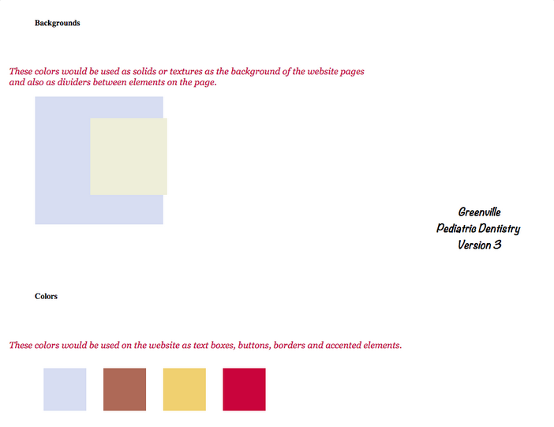

Thanks for visiting my website! I am a graduate of The Iron Yard, Greenville, SC. My education/experience includes graphic design, and web design with HTML and CSS/SCSS.
I also have several years of experience in video editing, audio/video/lighting and concert management.
Please contact me via email at katierosemccarthy@gmail.com to get your project started!

Greenville Pediatric Dentistry Website
This project was a website redesign. The original site was Greenville Pediatric Dentistry.
Check out the original coded Style Tiles for this project.

Style Tiles
Style Tiles are great for making decisions on the color palette, typography and imagery that will be used in the site.